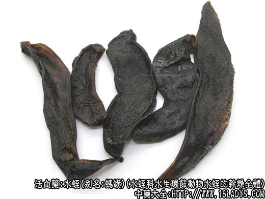
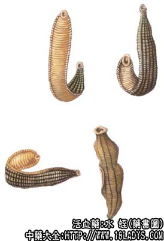

本品为少常用中药。始载《神农本草经》列为下品。商品按其形状不同，有宽水蛭、长条水蛭及水蛭三种。
来源：为水蛭科水生环节动物蚂蟥（宽水蛭）、柳叶水蛭（长条水蛭）及水蛭的干燥全体。生于湖泊、池塘以及水田中。均为野生。
产地：主产于山东、江苏、其他各地亦有生产。
性状鉴别：
宽水蛭：呈扁平纺锤形，全体由许多环节组成，长5～9厘米，宽0.8～2厘米，常腹背相贴而呈拘挛状。体前端稍尖，后端钝圆，前吸盘不显著，后吸盘较大。背面黑棕色。体两侧及腹面为棕黄色。质脆，易折断，断面角质样。有腥气。
长条水蛭：呈狭长扁平形（有的加工时拉成线状），体节明显或不明显。长5～12厘米，宽3～5毫米，体两端稍细，因加工时两端穿有小孔，所以吸盘不明显。背腹面匀呈黑棕色。质脆，易折断，断面无光泽。气同上。
水蛭：呈扁长圆柱形，通常用线穿起，体多弯曲扭转。
主要成分：鲜品含水蛭素，为水蛭头部腺体的分泌物，是一种多肽。但在干燥生药中水蛭素已破坏。此外，其分泌物另含一种组织胺样物质。还含有肝素和抗血栓素。
药理作用：破血逐瘀。所谓破血，就是能使蓄血或积瘀消散而吸收入血循环中或从大便泻出而解。从现代医学观点来看，其作用原理似乎在于抗凝血和扩张血管、改善血循环而促吸收。新鲜水蛭肯定是具有这些作用的，因为水蛭素能延迟或阻碍血液凝固，虽经煮沸，水蛭素仍能保持其凝血作用；又分泌物内的组织胺样物质有扩张血管作用。至于水蛭经过炮制成药材后，是否仍有抗凝血和扩张血管的作用？作用有多强？有效成分是什么？这些问题仍有作进一步的实验研究和临床观察来回答。
炮制：滑石粉烫鼓起，或黄酒炙切咀。
性味：咸、苦、平、有毒。
归经：入肝、膀胱经。
功能：通经、破瘀、消肿。
主治：瘀血停滞、经闭、血块积聚、丹毒痈肿、跌打损伤等。
临床应用：1、用于跌打损伤，如内伤挫伤，内有瘀肿、蓄血、可用水蛭锉末，或煅烧（存性）成末，再配三七末、麝香等，用酒或温开水送服，或浸酒内服。
2、用于癓瘕，在抗癌剂内试用，一般是配合其他抗癌中草药制成丸散片剂内服，例如配海藻制成水蛭海藻散治食管癌，但疗效有待进一步观察。
使用注意：水蛭药力较猛，只适宜于邪实之证，凡有下列情况者不宜食用：1、体质素亏，脉软弱无力者；2、孕妇；3、有出血倾向者；4、贫血患者（因服水蛭后往往贫血更甚）。此外，服水蛭时一般要配补养气血药为助，以防对身体有害。
用量：不宜多服。入煎剂一般用1.8～4.5g，抗癌时最多用至6～9g，入散剂用0.3~0.6，最大量1.5～2.4g研末装入胶囊内冲服最好，因水蛭腥味难闻，入煎剂时更甚。
处方举例：水蛭海藻散：水蛭6g、海藻30g，共研细末，每服6g，以黄酒冲服。